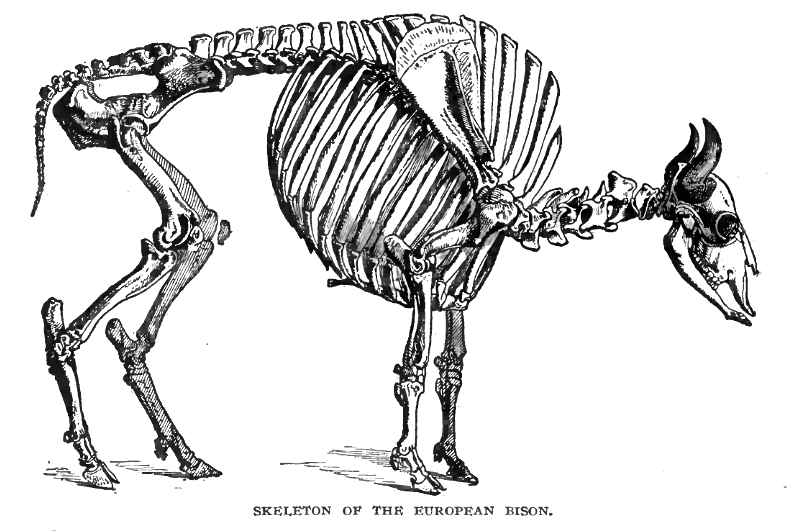
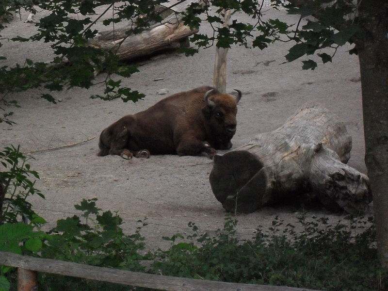

Этымалогія:
Зубр — кароткая форма старажытнага прыметніка, утвораная ад зуб з дапамогай суфікса -р-. Зуб мае больш
старажытнае значэнне тыпу «востры, выступаючы прадмет», якое пазначала доўгія рогі гэтай жывёлы, таму Зубр
можна перакласці як «рагаты format»[5][6].
Апісанне:

Зубр — самае цяжкае і буйное з наземных млекакормячых у Еўропе[7]. Варта заўважыць, што гэта тычыцца старых
замераў XIX і першай паловы і сярэдзіны ХХ стагоддзяў, а сучасныя зубры сталі некалькі драбнейшыя і
саступаюць па памерах як сваім продкам (і іх пудзілам), гэтак і сучасным амерыканскім лясным бізонам (Bison
bison athabascae) (падвід амерыканскіх бізонаў). Вага сучасных дарослых самцоў белавежскага падвіду дасягае
850 кілаграмаў[8], каўказскага — 700. Даўжыня тулава да 330 см[7] ці нават большая[8], вышыня ў плячах ад
1,6 да амаль 2 метраў[8]. Самкі драбнейшыя за самцоў[9]. Як ужо адзначалася, сучасныя зубры некалькі
здрабнелі, а даныя аб звычайным для іх росце ў 2 метры і вазе да тоны[7], якія сустракаюцца ў энцыклапедыях
і даведніках, грунтуюцца на абмеры жывёл векавой даўнасці.
Пярэдняя частка цела ў зубра значна лепш развіта[9] — яна масіўнейшая, вышэйшая і шырэйшая чым задняя, карак
і перад спіны(руск.) бел. выдаецца гарбом[10][11].
Жывот(руск.) бел. падабраны і не правісае.
Галава жывёлы масіўная[11], укарочаная з шырокім выпуклым ілбом[12], нахіленая ўніз. Рогі ў
зубра невялікія[11] і чорныя, круглявыя, выпуклыя, накіраваныя выгібам вонкі (у бакі), а кончыкамі ўверх. На
працягу жыцця яны не змяняюцца, унутры полыя[12]. Даўжыня іх па вонкавым выгібе да 65 см, развал — да 78
см[13].
Вушы кароткія і шырокія, густа парослыя поўсцю ўнутры і звонку[12].
Вочы маленькія і шырока расстаўленыя, цёмна-карычневага, амаль чорнага колеру, вочны яблык
выпуклы і рухлівы[10][12]. Зрэнка вертыкальна даўгаватая, у сярэдзіне звужаная. Вейкі доўгія і густыя[12].
Губы, язык і паднябенне(руск.) бел. цёмныя, аспідна-сіняватага колеру[12]. Язык пакрыты
сасочкамі значнай велічыні[12].
Зубоў 32. Формула іх у зуброў агульная з большасцю жвачных (Ruminantia): разцы 0/3, клыкі 0/1,
перадкарэнныя 3/3, карэнныя 3/3. Разцы пашыраныя і маюць долатападобную форму[12][13].
Шыя магутная, тоўстая, без характэрнага для многіх быкоў адвіслага падгрудка(англ.) бел.. Ногі
у зубра моцныя, тоўстыя, прычым пярэднія нашмат карацейшыя за заднія. Капыты вялікія, выпуклыя, ёсць таксама
маленькія бакавыя капыткі, якія не дасягаюць зямлі (рудыменты(руск.) бел.).
Хвост у зуброў пакрыты доўгімі валасамі амаль па ўсёй даўжыні, на канцы густы валасяны пучок,
падобны на пэндзаль. Хвост прыкметна адрознівае зубра ад іншых быкоў і хатняга рагатага быдла. Хваставых
пазванкоў ў зубра на адзін больш, чым у хатняга быка, але кожны з іх карацейшы, таму ў цэлым і ўвесь хвост
карацейшы, што асабліва прыкметна пры параўнальна вялікіх памерах звера. Апошні хваставы пазванок не
даходзіць да скакацельнага сустава(англ.) бел.[12].
Без уліку рагоў і капытоў зубр цалкам пакрыты густой поўсцю і толькі сярэдзіна верхняй губы і пярэдні край
ноздраў голыя[12]. Спераду тулава і на грудзях поўсць доўгая і падобная на грыву[11], а на горле і
падбародку — на бараду. Галава і лоб пакрытыя кучаравай поўсцю[12]. Ззаду поўсць кароткая, што асабліва
кідаецца ў вочы ў параўнанні з доўгай поўсцю спераду, таму часам складваецца памылковае ўражанне, быццам
задняя частка ў зубра голая, але гэта не так — уся скура ў зубра пакрыта поўсцю[12].
Летняя афарбоўка(ням.) бел. зубра каштанава-бурая. Галава прыкметна цямнейшая за тулава. Барада чорная,
грыва светла-каштанавая. Зімовая афарбоўка цямнейшая, акрамя таго зімовая поўсць даўжэйшая, гусцейшая і
больш кучаравая чым летняя. У маладых цялят поўсць бежавая[10] пры нараджэнні, пазней — карычневая з
чырвоным адценнем[14].
Вясновая лінька(руск.) бел. адбываецца ў сярэдзіне мая-чэрвені, прычым да чэрвеня старая поўсць вылазіць
настолькі, што зубры здалёк здаюцца голымі. У верасні поўсць кароткая, але падшэрстак(руск.) бел. такі
густы, што з-за яго ўжо не відаць скуры. Да зімы поўсць даўжэе, асабліва ў пярэдняй частцы цела і на галовах
у самцоў[10][12]. Шэрсць на загрыўку зуброў тырчыць уверх, з-за чаго жывёлы здаюцца вышэйшымі.
Каровы меншыя за быкоў ростам[10], маюць больш тонкія і гладкія рогі. Поўсць на галаве і шыі, а таксама
барада меншыя чым у самцоў. Зубраняты адрозніваюцца ад хатніх цялят вялікімі галовамі, высокім гарбатым
каркам і барадой[12], якая звешваецца з ніжняй часткі мыскі. Поўсць у маладых зуброў карацейшая чым у
дарослых.
Наяўнасць зуброў у пэўнай мясцовасці можна вызначыць па іх слядах(руск.) бел. і памёце, а таксама па
аб'едзенай папараці (ні ва ўсходнееўрапейскіх лясах, ні на Каўказе цяпер няма іншых жывёл, якія б елі
папараць). Памёт зуброў вельмі падобны на каровін. След звера таксама вельмі падобны на след каровы, толькі
пяткі значна больш ўціскаюцца і самі сляды большыя і круглейшыя, чым у кароў. У зубрыц след некалькі
даўжэйшы і вастрэйшы, чым у самцоў[12].
Арэал:

Гістарычны арэал віду прасціраўся ад Пірэнеяў, Англіі і паўднёвай Скандынавіі да Заходняй Сібіры.
Вольнажывучыя папуляцыі зараз ёсць у Польшчы[7], Літве, Беларусі[7], Украіне[7], Румыніі[7], Расіі[7],
Славакіі[7], Латвіі, Кыргызстане, Малдове (з 2005 года)[16] і Іспаніі (з 2010)[17].
На Беларусі існуе сем прыродных мікрапапуляцый зуброў: Белавежская, Барысаўска-Бярэзінская, Налібоцкая,
Палеская, Асіповіцкая, Азёрская, Азяранская, агульнай колькасцю каля тысячы галоў[18][19][20].
Роднасныя адносіны
Зубр вельмі блізкі да бізона амерыканскага (Bison bison), з якім уваходзіць у адзін род. Абодва віды могуць
без абмежаванняў скрыжоўвацца і даваць пладавітае патомства — зубрабізонаў(руск.) бел., з-за чаго іх часам
разглядаюць як адзін від.
Падвіды:
Усяго існавалі тры падвіды зуброў, два з якіх на сучасных момант зніклі:
- Bison bonasus bonasus — белавежскі зубр;
- ison bonasus caucasicus — каўказскі зубр(руск.) бел. (апошнія «чыстыя» прадстаўнікі падвіду былі знішчаны ў
пачатку ХХ стагоддзя);
- Bison bonasus hungarorum — зубр карпацкі або венгерскі (канчаткова знішчаны ў канцы ХVIII
стагоддзя)[21][22].
Белавежскі (еўрапейскі) падвід аднаўляецца шляхам развядзення жывёл, якія захаваліся ў заапарках, каўказскі
— узнаўляецца гібрыдызацыяй Bison bonasus і Bison bonasus caucasicus.
Асаблівасці біялогіі:
Гон
Гон(руск.) бел. у зуброў адбываецца ў канцы лета — пачатку восені (жнівень (ліпень[8])-верасень)[10][14]. У
сезон размнажэння(укр.) бел. быкі рыюць капытамі зямлю, труцца аб дрэвы, б'юцца паміж сабой, але пры гэтым у
адрозненне ад хатняй жывёлы не равуць.
Пераважаюць лабавыя (лоб у лоб) сутыкненні, але нярэдкія і ўдары рагамі збоку. Пачынаецца бой з дэманстрацыі
пагрозы: быкі стаяць адзін супраць аднаго, нахіліўшы галаву, рохкаюць, качаюць галавой уверх-уніз,
направа-налева, капаюць зямлю капытом, валяюцца па зямлі, а затым, сутыкаючыся лбамі, спрабуюць прагнаць
праціўніка[23].
Бойкі часта атрымліваюцца даволі жорсткімі. У барацьбе за самку самцы нярэдка наносяць адзін аднаму цяжкія
траўмы(руск.) бел.[24]. Пераможаны зубр апускае галаву, як бы прызнаючы перавагу суперніка, паварочваецца і
адыходзіць[10][23].
Цяжарнасць і дзяцінства
Як і ў свойскіх быкоў, у зуброў цяжарнасць доўжыцца 9 месяцаў[10], таму роды прыпадаюць на канец
красавіка-май. У каровы нараджаецца адно зубраня вагой да 25 кг[10], якое праз 1-1,5 гадзіны ўжо можа бегчы
за самкай[9][10]. Зубрыха год выкормлівае цяля малаком (яго тлустасць — 8-12 %, часам да 14
%[8])[10][14][23], але дзіцяня не пакідае маці на працягу двух гадоў, хоць на другі год ужо сілкуецца
самастойна. Першую раслінную ежу зубраня спрабуе ва ўзросце трох тыдняў.
Палавой спеласці(руск.) бел. зубры дасягаюць у шасцігадовым узросце, часам раней. Гон у самак здараецца раз
у 3 гады. Працягласць жыцця складае 20-25 гадоў, асобныя прадстаўнікі віду дажываюць да 30 гадоў (у
заапарках працягласць жыцця зуброў звычайна даўжэйшая чым на волі)[8][10].
Харчаванне
У вясенне-летні перыяд зубры трымаюцца ў мясцінах з разнатраўем і сілкуюцца пераважна травой і значна менш —
карой дрэў, увосень часта збіраюцца ў дубровах. Зімой добра раскопваюць корм з-пад снегу капытам ці рогам,
робяць ямкі ў снезе пысай[9], ядуць шмат галінак і кары[10], але часам могуць есці нават ігліцу, у
запаведніках трымаюцца паблізу спецыяльных падкормачных пляцовак. Акрамя гэтага могуць есць пабегі раслін,
лішайнікі і нават грыбы[10].
Склад кармавых раслін зуброў адносна вялікі — не меней чым 400 відаў, склад корму мяняецца ў залежнасці ад
сезону і канкрэтнай мясцовасці[9].
З драўнянага корму перавага аддаецца грабу (Carpinus), ясеню (Fraxinus), ліпе (Tilia), дубу (Quercus), з
травяністых раслін — метлюжковым (Poaceae), бабовым (Fabaceae), астравым (Asteraceae). Хмызнякі і кустоўі ў
рацыёне прадстаўлены вярбой (Salix), малінай (Rubus), чарніцамі (Vaccinium myrtillus). Дарослыя зубры ў
суткі з'ядаюць 40-60 кг зялёнай масы (маладняк ва ўзросце 2-3 гадоў удвая менш) і выпіваюць да 50 літраў
вады. У натуральных умовах у летні перыяд травяністы корм зубра складае 70-80 %, драўняна-галінаваты — 20-30
%[13].
Паводзіны
Вялікую частку дня зубры спяць або дрэмлюць, хоць зрэдку могуць пасвіцца і днём, але як правіла на пашу або
на вадапой яны ідуць увечары за тры-чатыры гадзіны да заходу сонца.
Нягледзячы на свой велічэзны рост, зубр перамяшчаецца хутка. Ён нават можа скакаць галопам і, больш таго,
лёгка пераскоквае перашкоду вышынёй у 2 метры[24].
Гістарычна зубры статкавыя жывёлы(англ.) бел. — нават старыя самцы звычайна трымаліся маленькімі групкамі, а
звычайнымі былі статкі(руск.) бел. ў 6-8 і больш галоў на чале з вопытнай самкай[8]. У Белавежскай пушчы
трапляліся статкі да 50-60 галоў, на Каўказе такіх вялікіх не было. Зараз звычайна папуляцыі ў запаведніках
невялікія, што адбіваецца на памеры калектываў, якія ўтвараюць жывёлы. У норме статак зуброў складаецца з
кароў, іх цялят і маладых бычкоў 2-3 гадоў. Маладыя быкі пасля пакідання статка часта аб’ядноўваюцца і
ўтвараюць групы «маладых халасцякоў». Дарослыя самцы трымаюцца асобна (адзінцы) і далучаюцца да статкаў
толькі падчас гону[10]. Зімой асобныя статкі часта аб’ядноўваюцца ў яшчэ большыя групы, у якіх можа
знаходзіцца і некалькі самцоў.
Пражыванне:
Гістарычна зубры — жыхары мяшаных лясоў[9][10], пры гэтым белавежская папуляцыя жыла ў
раўнінных, а каўказская — у горных лясах(руск.) бел.. Звычайна зубры выбіраюць сабе пэўны ўчастак, як правіла
каля ракі, на якім і пасвяцца. У выпадку недахопу корму жывёлы шукаюць сабе новыя участкі. Багністых
мясцовасцей зубры пазбягаюць і наведваюць іх толькі ў засухі, калі нават такія ўчасткі становяцца сушэйшымі. У
старажытнасці, калі ў еўрапейскіх лясах яшчэ жылі туры (Bos primigenius), гэтыя два віды быкоў дзялілі паміж
сабой экалагічныя нішы — туры жылі ў вільготных і багністых нізінах, а зубры ў сухіх лясах. Вясной зубры
трымаюцца каля рэк, а з пачаткам лета пераходзяць пасвіцца ў глыбіню лесу. У самую спякоту хаваюцца ў густых
цяністых зарасніках. Ад насякомых-крывасмокаў жывёлы ратуюцца ў сухіх месцах і ў мясцовасцях, дзе лес
прадзімаецца ветрам.
Пасвяцца зубры раніцай і ўвечары, выходзячы на паляны, а сярэдзіну дня праводзяць на лежні
ў лесе, перажоўваючы жвачку. У гарачае надвор'е зубры двойчы ў дзень ходзяць на вадапой. Яны любяць катацца ў
сухой друзлай зямлі, але гразевых ваннаў не прымаюць[9].